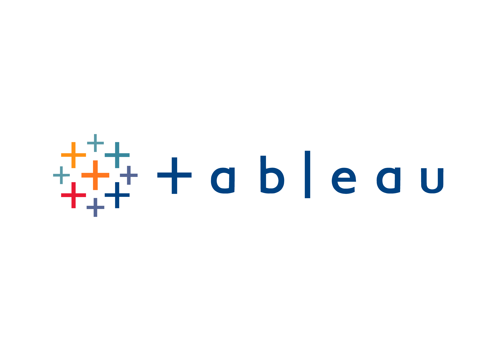
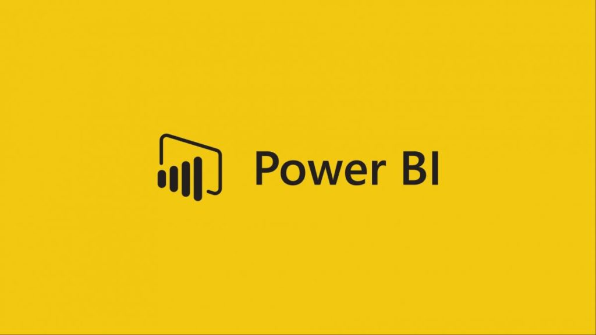

July 08, 2024
Tech layoffs dataset from COVID 2019 were explored and cleaned using SQL.
This project involves analyzing a dataset of tech industry layoffs during the COVID-19 pandemic using SQL. The steps include importing the dataset into SQL Server,
performing data cleaning to handle missing values and inconsistencies, and executing SQL queries to explore the data. The analysis focuses on identifying trends such as the number of layoffs over time, affected companies, and geographical distribution, providing insights into the impact of the pandemic on the tech sector.

Image credit:Shutterstock.com

Image credit: Wikipedia
Data Exploration of Covid-19 Dataset in SQL Server to analyze a Covid-19 dataset. Key steps include importing the dataset into SQL Server, cleaning the data, and executing various SQL queries to explore and
understand trends, such as infection rates, recovery rates, and fatalities over time and across different regions. This process helps uncover insights and patterns in the data, aiding in better understanding and decision-making regarding the pandemic.
Image credit: logowik
Data visualization using Tableau Public for different projects.
.png)
Image credit: Wikimedia
Data analyses in Python using pandas, numpy, matplotlib, seaborn.
Image credit: Plus-it
Data visualization using Microsoft Power BI for different projects..

Image credit: medium
Data visualization using lookerstudio for different projects..